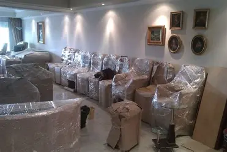

النقل بين المدن داخل المملكة العربية السعودية يتطلب دقة مضاعفة، خاصة عند نقل الأثاث من المدينة المنورة إلى الرياض أو جدة. خبرتنا التي تمتد لـ 25 عاماً لخصت لك الخطوات الأساسية:
1. الفك على يد نجار مختص
يجب فك جميع القطع الكبيرة والمفروشات بواسطة نجار متخصص. هذا يضمن أن القطع سيتم إعادة تركيبها بكفاءة دون تلف في الوصلات أو المسامير. هذا هو الضمان الأول لسلامة أثاثك.
2. التغليف المضاعف بالبابلز والاسترتش
للمسافات الطويلة، يجب استخدام طبقة من البابلز لحماية الزجاج والأسطح الحساسة، تليها طبقة من الاسترتش رول لحماية الأثاث الخشبي من الخدوش والأتربة. لا تتردد في طلب مواد التغليف عالية الجودة منا.
3. استخدام سيارات نقل مغلقة ومجهزة
نحن نستخدم أسطولاً من السيارات والشاحنات المغلقة والمبطنة داخلياً. هذه السيارات مصممة خصيصاً لتحمل اهتزازات الطريق والحرارة العالية، مما يضمن وصول أثاثك بأمان تام إلى وجهته.
4. الجدولة الدقيقة لوقت الوصول
نعمل على جدولة مواعيد النقل بدقة شديدة لتجنب التأخير. سائقونا محترفون وعلى دراية تامة بكافة الطرق بين المدن، مما يوفر عليك الوقت والجهد.
5. التأمين والضمان الموثق
تأكد من أن شركة النقل توفر لك ضماناً على سلامة المنقولات. في شركة التوفير، خبرتنا هي ضماننا، ولكننا نوفر أيضاً وثائق تضمن لك راحة البال طوال عملية النقل.